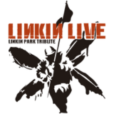

Linkin Live — Projeto Web Interativo de Experiência Musical | Front-End Web Design
O Linkin Live é uma página web interativa desenvolvida com o objetivo de oferecer uma experiência visual e musical imersiva para os fãs da banda Linkin Live...
O projeto apresenta uma curadoria de apresentações ao vivo da banda, integrando vídeos diretamente do YouTube em uma interface dinâmica, moderna e intuitiva.
O principal destaque da página é um carrossel de imagens interativo, que funciona como uma galeria de shows. Cada slide representa um momento único da banda nos palcos, com links diretos para os vídeos das apresentações. O usuário pode navegar facilmente entre os shows, explorar conteúdos e reviver performances icônicas com apenas um clique.
O design da página foi pensado para criar uma experiência fluida e responsiva, adaptando-se a diferentes tamanhos de tela, desde desktops até dispositivos móveis. A interface combina elementos visuais atrativos, tipografia moderna e uma paleta de cores que remete ao universo sonoro e estético da banda.
Este projeto demonstra conhecimentos sólidos em HTML5, CSS3, JavaScript, Flexbox e princípios de design responsivo. Também reforça habilidades em usabilidade, organização de conteúdo e integração com plataformas externas como o YouTube.
Se você é fã da banda ou simplesmente aprecia boas experiências digitais voltadas para música ao vivo, este projeto é para você!🎸🎤
Leia mais...
Ver Projeto

Palestra Dra. Miau - Uma Despedida com Respeito e Conscientização Ambiental | Educação Socioambiental
A Palestra Dra. Miau surgiu como uma iniciativa voltada à conscientização sobre a importância de oferecer uma despedida respeitosa aos animais de estimação...
A proposta nasceu da necessidade de abordar, com sensibilidade e responsabilidade, o destino final de cães e gatos que marcaram nossas vidas — destacando como essa prática pode honrar suas memórias e, ao mesmo tempo, contribuir para um futuro mais saudável e sustentável.
Mais do que informar, o projeto tem como objetivo emocionar e educar. Por meio de uma linguagem empática, clara e acessível, a apresentação aborda os benefícios emocionais para os tutores e os impactos ambientais positivos de práticas conscientes, como o enterro adequado. A palestra também busca quebrar tabus e abrir espaço para o diálogo sobre questões que, embora delicadas, merecem atenção e respeito.
Alinhada aos Objetivos de Desenvolvimento Sustentável (ODS) da ONU, especialmente os ODS 3 (Saúde e Bem-Estar), ODS 11 (Cidades e Comunidades Sustentáveis) e ODS 15 (Vida Terrestre), a iniciativa reforça o compromisso com a educação ambiental, o cuidado com o solo e o bem-estar coletivo.
Este projeto é um exemplo de como a comunicação pode ser usada como ferramenta de transformação social, combinando afeto, informação e responsabilidade ecológica.
Leia mais...
Ver Projeto
Jogo do Número Secreto
O "Jogo do Número Secreto" é um projeto desenvolvido com foco em reforçar conceitos fundamentais de lógica de programação e experiência do usuário. Trata-se de um jogo simples, porém altamente envolvente...
em que o objetivo principal é adivinhar um número secreto escolhido aleatoriamente pelo sistema, dentro de um intervalo de 1 a 50.
A cada tentativa, o jogador recebe dicas que indicam se o número informado é maior ou menor do que o número correto, promovendo uma dinâmica de tentativa e erro que estimula o raciocínio lógico e a persistência. Esse sistema de feedback contínuo garante que o jogador se mantenha engajado até alcançar o resultado final.
O jogo foi desenvolvido com uma interface limpa, responsiva e intuitiva, pensada para proporcionar uma experiência agradável tanto em dispositivos móveis quanto em computadores. A proposta visual simples e direta contribui para a imersão no desafio, tornando-o acessível para usuários de todas as idades.
Além de ser uma ferramenta divertida, o projeto também tem um caráter educacional, ideal para quem deseja aprender ou demonstrar habilidades básicas de desenvolvimento web e lógica de programação aplicada. Pode ser utilizado como um exercício introdutório para estudantes ou como um exemplo prático em portfólios profissionais.
Leia mais...
Ver Projeto

Planejamento de Comunicação e Marketing Digital com Foco em Redes Sociais
Desenvolver o planejamento de comunicação e marketing digital da PO Energy foi um processo estratégico e criativo...
guiado por uma análise profunda do cenário digital atual da empresa. Comecei com um diagnóstico completo do público-alvo, concorrência e presença online, utilizando ferramentas como a análise SWOT para mapear oportunidades e desafios. A partir disso, defini objetivos claros como a geração de leads, o fortalecimento da marca e a construção de uma comunidade online engajada. Estruturei estratégias específicas para redes sociais, marketing de conteúdo, tráfego pago e SEO, sempre pensando na personalização das mensagens para cada plataforma. O plano também contou com um cronograma editorial detalhado e metas mensuráveis, garantindo controle e otimização contínua. Essa experiência me permitiu aplicar conhecimentos de branding, planejamento estratégico e marketing digital de forma integrada, com foco em resultados reais para o negócio.
Leia mais...
Ver Projeto

Redação Otimizada para Blog Institucional
Este projeto consistiu na criação de um artigo informativo e otimizado para blog com o tema “Atas de Registro de Preços no Governo: Como Funcionam e Quais as Vantagens?”...
A proposta foi traduzir um conteúdo técnico e legal em uma linguagem acessível e clara, voltada a públicos com pouco ou nenhum conhecimento sobre processos de compras públicas. O principal desafio foi transformar informações complexas sobre leis, decretos e mecanismos de contratação pública em uma narrativa simples, prática e atrativa para o leitor. O texto foi estruturado com técnicas de SEO, uso de subtítulos, exemplos práticos e uma chamada para ação (CTA), tornando-o adequado para ambientes institucionais digitais que valorizam a transparência, eficiência e a educação do cidadão.
Leia mais...
Ver Projeto

Copy para Redes Sociais - Paraíba Carne de Sol
Atuei como redator responsável pela criação dos textos para as redes sociais do restaurante Paraíba Carne de Sol, com o objetivo de reforçar a identidade nordestina da marca e promover seus eventos, pratos e experiências gastronômicas de forma criativa, leve e envolvente....
Minha principal entrega foi um cronograma completo de conteúdos com foco em engajamento e conexão com o público, incluindo:
Textos promocionais para os pratos executivos do dia (frango, costelinha e carne de sol);
Chamadas para happy hour e música ao vivo;
Conteúdos afetivos voltados para momentos em família;
Posts semanais com a agenda musical da casa.
Todos os copies foram pensados para reforçar o tom de voz regional e autêntico da marca, utilizando expressões típicas do Nordeste e estimulando a interação com o público através de perguntas, marcações e sugestões.
Leia mais...
Ver Projeto

Cobertura de Ação Comercial - Cimed
Produzi a cobertura visual da ação de um representante comercial da Cimed, desenvolvendo materiais dinâmicos e alinhados à identidade da marca para redes sociais. A entrega envolveu a criação de elementos visuais minimalistas, artes animadas e abertura de vídeo no estilo Instagram Stories...
O projeto consistiu na construção de uma narrativa visual moderna e profissional para reforçar a presença da representante Cimed nas redes sociais. Entre as principais entregas estão:
- Criação de elementos gráficos minimalistas (linhas, ícones, setas e logo estilizada);
- Desenvolvimento de uma abertura de vídeo em formato vertical (1080x1920px), com fundo amarelo característico da marca, animações suaves e estética moderna;
- Adaptação para o formato de Story do Instagram, respeitando o padrão visual da Cimed;
- Organização dos materiais para facilitar a edição e a publicação em diferentes plataformas digitais.
O trabalho teve como foco traduzir a energia, inovação e proximidade da representante da Cimed com seu público, utilizando técnicas de design responsivo e storytelling visual.
Leia mais...
Ver Projeto

Vídeo Promocional – Rede Farmanobre
Desenvolvi um vídeo institucional para a Rede Farmanobre, focado em transmitir acolhimento, empatia e confiança ao público da marca. A peça foi pensada especialmente para redes sociais, reforçando o cuidado e o atendimento humano como diferenciais da farmácia...
Este vídeo promocional da Rede Farmanobre foi criado com o objetivo de gerar identificação e confiança com o público. Todo o conteúdo foi elaborado com foco no emocional, traduzindo o compromisso da marca com o cuidado e o bem-estar dos clientes.
Atuei nas seguintes etapas:
- Criação do roteiro e da estrutura narrativa do vídeo;
- Escolha da trilha sonora adequada para reforçar a mensagem emocional;
- Direção criativa e edição completa do material, com cortes suaves, ritmo harmonioso e estética humanizada;
- Adaptação para formatos otimizados para redes sociais e mídia digital.
O resultado é um conteúdo audiovisual direto e impactante, que reforça a imagem da Farmanobre como uma farmácia próxima, confiável e sensível às necessidades das pessoas.
Leia mais...
Ver Projeto